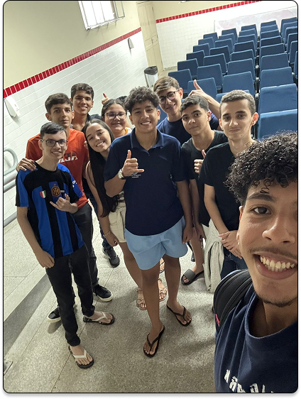

Quem Somos nós?

O projeto inicialmente surgiu quando o nosso professor Júlio César e o aluno Júlio Monteiro decidiram criar um sistema de monitoramento arbóreo para promover a arborização em Nossa Senhora da Glória, tendo em vista que a ausência de árvores locais e a falta de preservação do bioma resulta em ilhas de calor e um ambiente muito quente. Além disso, um sistema de geolocalização e controle de espécies que estão na cidade irão ajudar a promover a sustentabilidade, que, assim, vai mudar a realidade da cidade para melhor.
O projeto inicialmente surgiu quando o nosso professor Júlio César e o aluno Júlio Monteiro decidiram criar um sistema de monitoramento arbóreo para promover a arborização em Nossa Senhora da Glória, tendo em vista que a ausência de árvores locais e a falta de preservação do bioma resulta em ilhas de calor e um ambiente muito quente. Além disso, um sistema de
geolocalização e controle de espécies que estão na cidade irão ajudar a promover a sustentabilidade, que, assim, vai mudar a realidade da cidade para melhor.